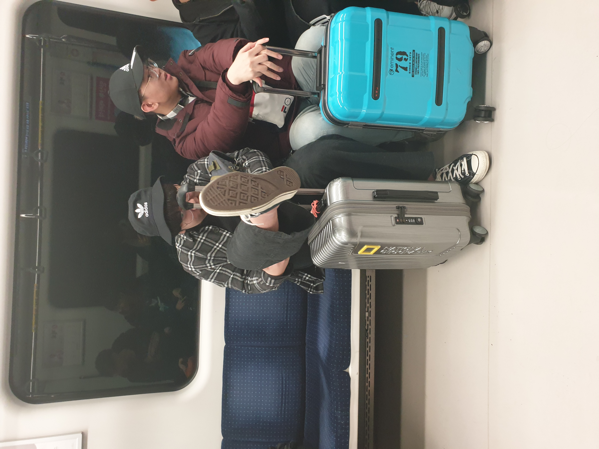

베트남 출국 전 공항철도에서 촬영된 모습. 상기된 송진혁(좌)의 모습이 인상적이다.

호치민 시청 앞을 점거한 모습.
2020년 1월 10일 경 개노답(9) 멤버들이 단체로 베트남 호치민으로 원정을
떠나버린 사건.
2020년 2월 20일 경 개노답(9) 멤버들이 코로나 시국에도 불구하고 단체로
제주도 한림으로 피크닉을 떠난 사건.

2022년 4월 4일 경 새벽 디스코드에서 개노답(9)의 단체 조직개편이 이루어졌다.
체계적인 질서가 없던 기존의 조직에서 권순원을 필두로 각 멤버별 닉네임과 역할이
재분배 되었다.
재분배된 역할과 닉네임은 아래와 같다.
| 이름 | 역할/닉네임 | 기존 | 신규 |
|---|---|---|---|
*닉네임 선정에 관한 여담
[1]김병우의 기존 닉네임은 '은성이은성이야야야' 였는데 새벽 3시에 송진혁
의 다급한 항의 전화로 부득이하게 변경하게 되었다.[2]김병우의 닉네임은 머리를 왼쪽으로 90도 돌려서 보면 본명이 보인다.
인스타와 같은 닉네임을 사용하는데 패드립으로 오해한 사람들이 언팔과
DM을 하고 있다고 한다.[3]송진혁 본인이 지정한 닉네임은 '합기도 3단인 사람'.
닉네임의 유래는 불명.[4]염준호 본인이 지정한 닉네임은 무려 'girlscandoanything'.
[5]지현도는 기존 부관의 역할에서 이번 대대적 개편으로 파격적인 강등을 당했는데
최근 들어서 온라인 상의 역할이 두드러지지 못하고 참여율도 낮아서 강등을 당했다.
이를 두고 가장 좋아한 멤버는 이호준이었는데 평소에
쌓인게 많았는지 수시로 음소거를 넣으며 자신의 권력을 과시하고 있다.